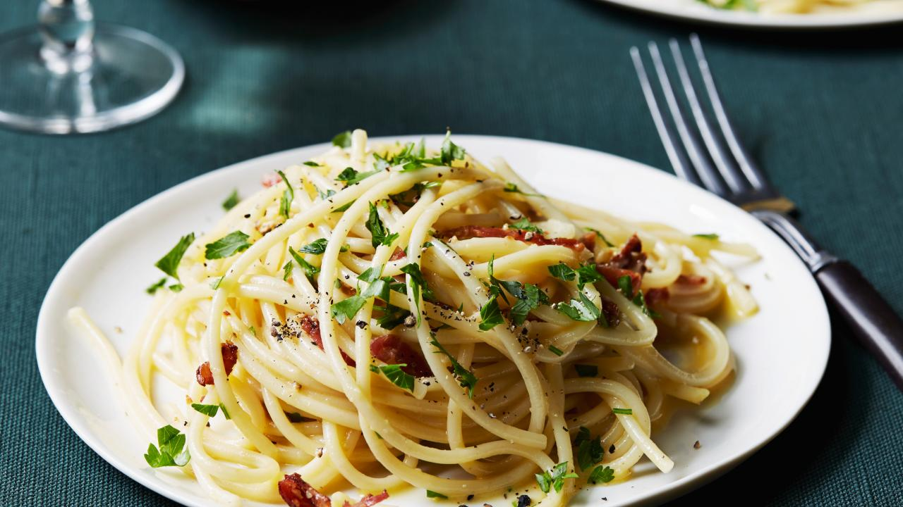

Spaghetti Carbonara

Makes 4 Servings
- Prep Time: 5 mins
- Cook Time: 10 mins
Ingredients
- • 4 eggs
- • 10 oz spaghetti
- • 1 cup grated Parmesan
- • 6 rashers bacon, diced
- • 6 garlic cloves, minced
- • 3 tbsp chopped fresh parsley leaves
- • sea salt and black pepper, to taste
Instructions
- Cook pasta in a pot of boiling water, as designated on the package
- Drain well while reserving a ½ cup of water
- Whisk eggs and parmesan together in a small bowl then set aside
- Heat a large pan or skillet over a medium-high heat
- Add bacon and cook until crispy with a golden brown (about 7mins)
- Reserve excess bacon fat into a tiny bowl
- Add garlic and stir for about 1min
- Reduce heat of the pan to a low-medium
- Quickly stir in the egg and pasta mixture, while tossing to incorporate
- Season dish with salt and pepper, to taste
- Add a dash of reserved pasta water, little by little, until reaching preferred consistency
- Serve immediately and if desired, add parsley as a garnish